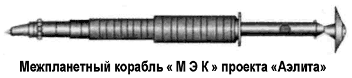

Проект «Аэлита»
О полете к Марсу вновь заговорили в 1968–1969 годах. Лунная «гонка» была проиграна, и для восстановления потерянного престижа в Советском Союзе серьезно рассматривали возможность затеять марсианскую «гонку».
Инициатива исходила от академика Мстислава Келдыша, который на Совете главных конструкторов 27 января 1969 года заявил следующее (цитирую по книге Бориса Чертока «Ракеты и люди. Лунная гонка»):
«…Меня беспокоит, что у нас нет [..] ясной цели. Сегодня есть две задачи: высадка на Луну и полет к Марсу. Кроме этих двух задач ради науки и приоритета, никто ничего не называет. Первую задачу американцы в этом или следующем году решат. Это ясно. Что дальше? Я за Марс. Нельзя делать такую сложную машину, как H1, ради самой машины и потом подыскивать для нее цель. 1973 год — хороший год для беспилотного полета тяжелого корабля к Марсу. Мы верим в носитель H1. Я не уверен в 95 тоннах, но 90 будем иметь с гарантией. Последние полеты «Союзов» доказали, что стыковка у нас в руках. Мы можем в 1975 году осуществить запуск пилотируемого спутника Марса двумя носителями H1 со стыковкой на орбите. Если бы мы первыми узнали, есть ли жизнь на Марсе, это было бы величайшей научной сенсацией. С научной точки зрения Марс важнее Луны».
Итак, задача была сформулирована. В качестве носителя должна использоваться ракета «Н-1» (или «Н-1М»). На нее и ориентировались проектанты группы Константина Феоктистова, которому был поручен новый проект.
Основные параметры проекта экспедиции, известного впоследствии под романтическим названием «Аэлита», предполагались следующими: продолжительность полета — 630 дней; пребывание на околомарсианской орбите — 30 дней; пребывание на Марсе посадочного модуля с космонавтами — 5 дней.
Сам корабль, получивший рабочее название «Марсианский экспедиционный комплекс» («МЭК»), предполагалось создать на околоземной орбите путем автоматической стыковки двух беспилотных блоков массой примерно по 75 тонн, выводимых в космос модифицированным вариантом ракеты «Н-1М».
Первый блок — марсианский орбитальный комплекс («МОК») и марсианский посадочный комплекс («МПК»), второй — комплекс электроракетной двигательной установки с ядерным источником электроэнергии.

Конструкция марсианского корабля представляла собой удлиненную иглу с вынесенным для радиационной безопасности реактором и коническим тепловым радиатором. В отличие от проекта «ТМК-Э» на поверхность Марса садился один аппарат сегментально-конической формы с разворачивающимся лобовым щитом. Численность экипажа была уменьшена до четырех человек, а мощность ядерного реактора увеличена до 15 МВт.
Блок ЭРД с ядерным источником электроэнергии включал два «запараллеленных» реактора большой мощности, расположенных в крайней точке комплекса и экранированных от других систем теневой защитой и коническим баком с рабочим телом ЭРД (расплавленный литий). Между теневой защитой и баком по кольцу — электроплазменные движители (собственно ЭРД), выхлопные струи которых, бьющие под небольшим углом к образующей конуса бака, также служили своеобразным радиационным экраном от излучения реакторов.
Далее следует телескопический раздвижной двухсекционный радиатор-излучатель энергоустановки, в передней части которого имеется агрегат для стыковки с другим блоком, включающим «МОК» и «МПК». Здесь же расположены теневой экран для тепловой защиты обитаемых отсеков комплекса.
За ним — возвращаемый аппарат «МОК», который должен был входить в атмосферу Земли со скоростью, превышающей вторую космическую. Экипаж после длительного полета в невесомости мог плохо переносить перегрузки, потому разработчики при выборе рациональной формы спускаемого аппарата ориентировались на повышение аэродинамического качества. В частности, рассматривались типичная «фара» от «Союза», но увеличенного размера (диаметр — 4,35 метра, высота — 3,15 метра), «чечевица» диаметром 6 метров или клиновидное аэродинамическое тело. Далее шли отсеки комплекса «МОК». Они имели вертикальное построение в семь этажей: приборно-агрегатный, рабочий, лабораторный, биотехнический, жилой, салон и отсек двигателей ориентации.
Габариты «МЭК»: полная длина — 175 метров, максимальный диаметр — 4,1 метра, полная масса — 150 тонн.
После стыковки блоков предполагался медленный разгон корабля по постепенно раскручивающейся спирали. Как только «МЭК» выйдет из зоны радиационных поясов Земли следовало осуществить подсадку экипажа на комплекс с использованием кораблей типа «7К-Л1» («Зонд»), оснащенных средствами сближения и стыковки на высокой околоземной орбите и запускаемых на траекторию полета с помощью РН «Протон-К» с разгонными блоками «Д».
Предполагалось, что после окончания активного участка разгона Земля — Марс ЭРД выключаются, энергетическая установка переходит в режим «холостого хода» и комплекс в течение 150 суток совершает пассивный полет. Затем начинается второй активный участок полета к Марсу — торможение перед входом в сферу действия красной планеты (61 сутки) и полет по скручивающейся спирали для выхода на орбиту искусственного спутника Марса (24 суток).
Во время 30-суточного пребывания на околомарсианской орбите от комплекса отделяется «МПК», который совершает мягкую посадку на поверхность Марса.
«МПК» имел раскрываемый аэродинамический экран, снаружи которого крепился сбрасываемый навесной отсек для стыковки на орбите ИСЗ и торможения и схода «МПК» с орбиты Марса. «МПК» был оснащен посадочной ступенью с ЖРД, цилиндрическим жилым отсеком, соединенным с кабиной космонавтов посредством люка-лаза, а также двухступенчатым возвращаемым аппаратом «МПК» со сферической кабиной.
Выполнив исследования, экипаж загружается в возвращаемый аппарат «МПК», который выходит на орбиту Марса, осуществляет взаимный поиск, сближение и стыковку с «МОК». Космонавты переходят в жилые отсеки орбитального комплекса, а ненужный уже посадочный корабль сбрасывается.
Двигатели «МОК» включаются на режим разгона, который продолжается 17 суток в сфере действия Марса и еще 66 — вне его пределов. После длительного пассивного участка, когда траектория комплекса проходит на максимально близком расстоянии от Солнца (между Венерой и Меркурием), следует 17-суточный активный участок возврата, фактически это коррекция траектории с целью уменьшения длительности полета путем увеличения скорости. Далее снова идет пассивный участок, а за трое суток до полета к Земле ЭРД включаются вновь, уменьшая скорость комплекса. При входе в сферу действия Земли от «МЭК» отделяется спускаемый аппарат.
Время экспедиции не должно было превысить 630 дней.
Реализовать проект «Аэлита» не удалось. Он оказался похороненным вместе с лунной программой. Дело в том, что в 1974 году были прекращены работы по тяжелому носителю «Н-1», а вместе с ними закрылись и все проекты пилотируемых экспедиций к другим планетам. В этом есть своя логика: к чему строить планы, если реализовать их все равно невозможно…